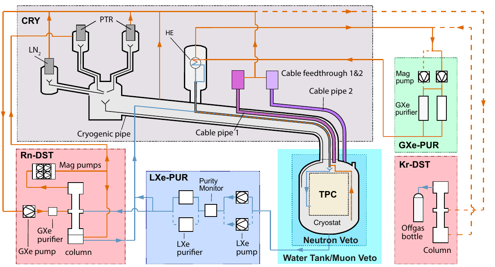
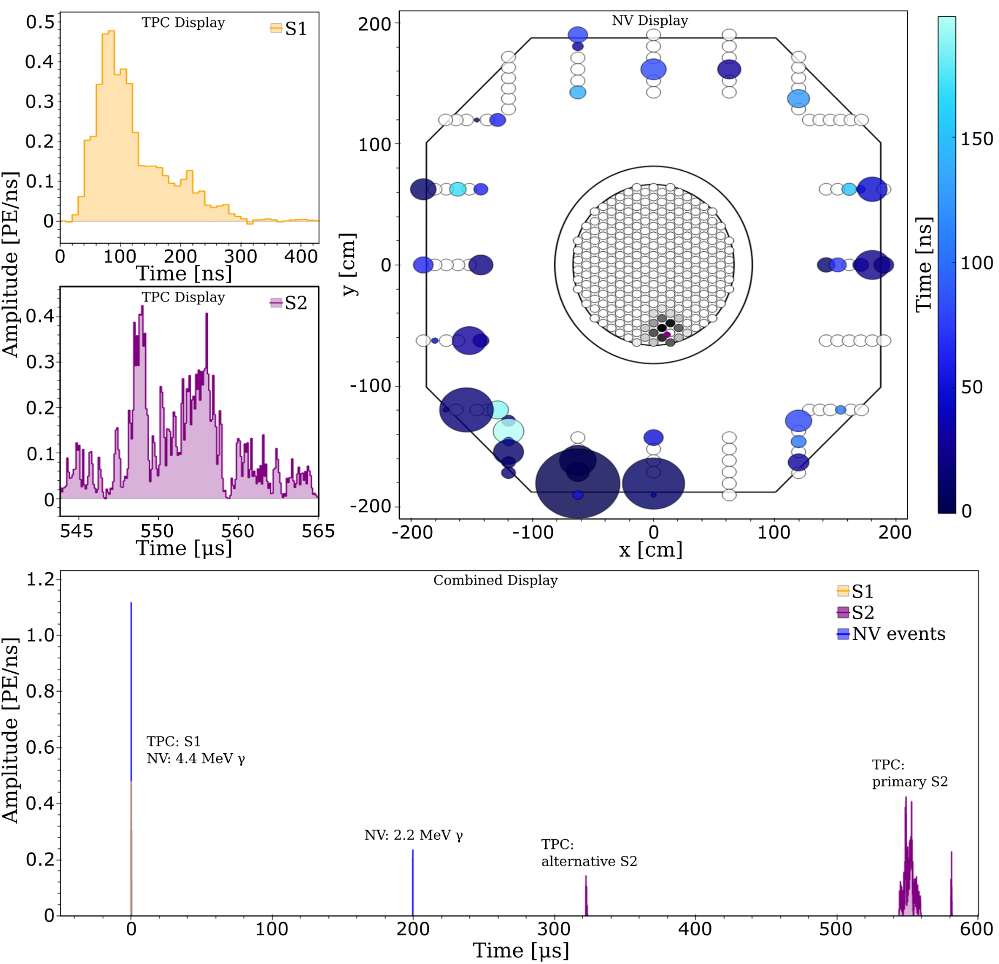
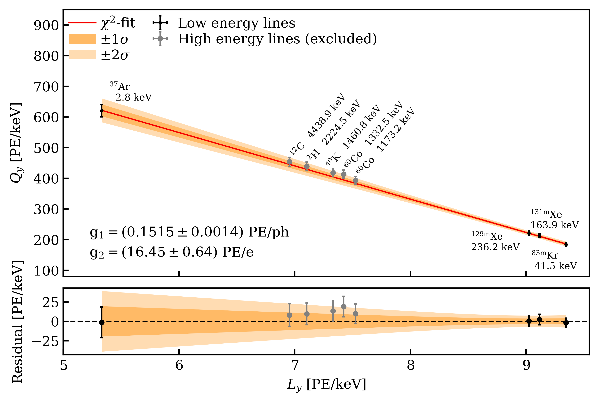
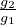
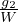

XENONnT
E. Aprile et al.
XENON Collaboration
XENON (LXe TPCs) [1–3]. (WIMPs) [4–10]. LXe 5.9 XENONnT XENON1T [11].
XENONnT 4 XENON1T. LXe 222 Rn 85Kr [12]. [13]. XENONnT .

Fig. 1: XENONnT (TPC ) . . . (CRY) (GXe-PUR LXe-PUR) (Kr-DST Rn-DST) 2.2. TPC 2.1 2.3 .1 XENONnT . B INFN Laboratori Nazionali del Gran Sasso (LNGS) . . XENONnT XENON1T . . .
TPC LXe 5.9 . (1) ( Polytetrafluoroethylene - PTFE) (2) (3) (4) (PMTs) LXe . 2.1 .
XENONnT XENON1T. XENON1T. LXe 4-16 / . 2.2.3 .
222Rn . 214Pb LXe . ∼1 μBq/kg XENONnT 1.73 / [14]. LXe . . 2.2.5 .
XENONnT . 33 3 Cherenkov . 𝒪(MeV) γ. Compton Cherenkov . TPC 2023 . 2.3.2 .
XENONnT XENON1T [3].
XENONnT LXe TPC . . [15]. TPCs XENON10 [16] ZEPLIN-II [17] XENON100 [2] LUX [18] PandaX-II [19] XENON1T [3] PandaX-4T [20] LZ [21] XENONnT [12, 13].
TPCs LXe TPC . (S1) Xe2∗ . (S2) LXe . (5-10 kV/cm) . S1 S2 ( Z) . X Y S2 PMTs . 3D ( ) [22].
S1 S2 . ( WIMP ) (NR). (ER’s) NR . S2/S1 NR ER. XENON1T >99.7% ER’s NR 50% [23].
XENON1T [3] LXe XENONnT. TPC ( PTFE) . (α,n) . TPC XENONnT . XENON1T [4]. XENON1T XENONnT . ( 2.1.3). TPC XENON1T 1620 mm.
2 CAD XENONnT TPC. 8.5 −98∘C 5.9 TPC. TPC 24 PTFE. TPC 1613 mm 1327 mm ( TPC −98 ∘C ). 48 PTFE : 24 PTFE mm . PTFE 24 . PTFE 3 mm TPC [24]. PTFE TPC 128 kg. LXe TPC 64 mm . 3 TPC .
PMTs S1 S2 253 PMT 241 PMT ( 4 2.1.2 ). PMT PTFE 8-mm . 25 mm ( ) 20 mm ( ) (OFHC) PTFE. PMT 4 mm . LXe. PTFE 175 nm [25].


TPC ( 2.1.3). / 1486 mm 8 mm ( 2). 1.5 mm PMT 28 mm PMT . PMTs. 55 mm 200 kg LXe S2 .
OFHC (TFSE) ( 2 2.1.3). PTFE 1 mm 640 mm ( 2 3). ( 2.1.3). ( 3) XENON1T [3]. Kapton [26] ConFlat SHV .
| TPC Electrode | Frame | Frame | Frame | Frame | Wire | Wire | Optical | Vertical | Design |
| Thickness | Shape | ID | OD | Diameter | Pitch | Transp. | Position | Voltage | |
| Top Screen | 15 mm | 24-gonal | 1334 mm | 1408 mm | 216 μm | 5 mm | 95.7% | +36 mm | −1.5 kV |
| Anode | 18 mm | 24-gonal | 1334 mm | 1408 mm | 216 μm | 5 mm | 95.7% | +8 mm | +6.5 kV |
| Gate | 20 mm | 24-gonal | 1334 mm | 1408 mm | 216 μm | 5 mm | 95.7% | 0 mm | −1.0 kV |
| Cathode | 20 mm | circular | 1347 mm | 1395 mm | 304 μm | 7.5 mm | 96.0% | −1486 mm | −30.0 kV |
| Bottom Screen | 15 mm | circular | 1345 mm | 1395 mm | 216 μm | 7.5 mm | 97.0% | −1541 mm | −1.5 kV |
1/4" . LXe TPC 5. GXe . 5.1 mm . . X-Y ( 3.3.3). TPC. 0.2 mm 10 mm. TPC TPC . 50 μm . (1.8 ± 0.1) × 10−4 rad.
TPC.
( PMTs ) ( 1). 1 XENON . XENON1T. 2 . ( 1).
253 241 PMTs Hamamatsu R11410-21 [27] . Hamamatsu XENON [28–30]. PMTs 520 153 XENON1T ( 248) 367 . PMTs XENON1T 10% PMTs . PMTs 367 15 11 XENONnT [30]). 494 . PMTs (QE) 34.1% Hamamatsu 20∘C 175 nm 90% [30].
PMTs 6. S2 PMT . PMTs QE ( 6). QE PMT PMTs . PMTs .
PMTs [31] Cirlex® XENON1T [29]. 30 mA 200 Hz. PMT [32] [33, 34] 2.1.1. ConFlat [35] 10−8 mbar l/s. PMTs ( ) DAQ. PMT (465 nm) TPC .

SS304 ( 1 ). ( 2.1.4). 3D . ∼1 mm .
SS316 [36] . ( LXe S2 ) . OFHC ( 1.98 mm) 2.1 mm ( 7 ). . / 12 . . 3 4 N ( ) . 0.36 mm . ( 2.1.4 [37]). 7% [38, 39].
LXe XENONnT . LXe. 304 μm ( 7 ) . 8 mm ∼7 mm LXe ( 1). S2 3.3.3.
(FS) PTFE ( 7 ). . COMSOL Multiphysics 2 3 PTFE TPC [40].
64 OFHC ( “ ”) 10.7 mm PTFE. 24 M3 ( 3 7 ) 15 mm×5 mm ( 2.5 mm). PTFE. () 21.6 mm LXe. 33 mm 73 mm 2.
71 ( ) PTFE. OFHC 2 mm 24 . PTFE PTFE. 0.25 mm ( ) PTFE. 21.6 mm ( 7 ). 11 mm . PTFE ( 7 ) .
5 GΩ [41] . . TPC −10 kV −30 kV. . . ( 58.4 mm 29.5 mm ). . COMSOL 1 −0.95 kV E
d= 191V∕cmRMS1% [40].
(ICP-MS) [43–47]. ( OFHC PTFE Torlon®) PMTs Hamamatsu [48] . XENON1T [49] TPC . Monte Carlo TPC [11]. ERs .
PMTs ISO 6 LNGS. [51]. ( ) 222Rn 226Ra . 210Pb 210 Po [52]. .
TPC . . PMT 14 . TPC Mylar . . TPC ISO 6 ( 2.2.1). TPC PMT . 7 TPC TPC . .

8 CAD . XENON1T LXe (ReStoX2).
TPC SS304 ( 2). (OV) XENON1T . ( ) . OV 1620 mm 3001 mm. (IV) 1460 mm 2666 mm . 5 mm. [53] IV . OV 30 IV . IV OV . M24 .
XENON1T LXe PUR / PMT ( 8). . ( 2.2.3).
XENONnT XENON1T. “ ” XENON100 [2] 6 m XENON [3]. [54] (PTRs) 250 W. [55] PTR . ( ) PTR LN2 GN2. LN2 .
XENONnT : ReStoX1 ReStoX2. TPC .
ReStoX1 XENON1T [3]. XENON 7.6 ( 8).
ReStoX2 ReStoX1. 60 bar 10 XENONnT . ReStoX1.
XENONnT ReStoX. LXe ReStoX1 . ReStoX1 ReStoX2 . ReStoX2. ReStoX2. 100 m2 1 t/. ReStoX1 . ReStoX2 .
XENONnT ( ) GXe (T) HTO HT ( 2.2.3). LXe ReStoX1 ( 2.2.1).
( O2) TPC ∼1.5 m. GXe XENON1T LXe [56].
XENON1T [3]. LXe TPC XENON ( 8). (getter) [57]. XENON1T [10] (HRUs) XENONnT. ( 2.2.5) GXe (QDrive) XENON1T XENONnT [58]. ( ) 50 SLPM . XENON1T [42]. ∼80 SLPM . . 3. .
LXe ( 8). LXe-LN2 . . LXe LXe . [59] 1-4 LPM ( 4-16 /) . SAES St707 O2 . St707 . O2 Engelhard Q-5 [60] St707 . / . XENONnT LXe O2 <0.1 ppb 7 . 3.
TPCs τe. e . τe S2 . LXe . [61]. UV [62] 20 cm LXe . τe
Δt Qa Qc . 25 μs 30 ms. . TPC S2 .
85Kr 222Rn TPCs LXe . . XENON1T [3, 63]. −98 ∘C. natKr <48 ppq (mol/mol) 90% CL (6.4−1.4+1.9) ⋅ 105. 85 Kr/natKr 2 ⋅ 10−11. 360 ppq XENON1T [64].
. . . natKr natKr. 3.2.4 .
HT . HT . XENON1T HT 144 (90% C.L.) [65].
XENON1T ER 214Pb [4]. XENONnT (4.2−0.7+0.5) μBq/kg [37]. 3 XENON1T (∼13 μBq/kg) [4]. 30% QDrive [66] XENON1T [67] . . XENONnT.
XENON100 [68] [69] . XENON1T . 222Rn 20% [42]. LXe XENONnT. . [14].
LXe 222Rn TPC . 222Rn 3.8 XENONnT 200 SLPM (1.7 /) 2.1 . ( 9) : ( ) [67]. LXe ( 8). () . ( [70]) LXe . - . LN2 . 95% . [14]. . 5% TPC PTR . / 100 1000 .
TPC ( ) SS. . QDrive [66] 20 SLPM [71]. [14] 100% 2 μBq/kg [37]. LXe 1 μBq/kg. 3.2.4 .
TPC Cherenkov NR ( 10). XENON1T TPC NR. XENONnT TPC. (SR0) . 2023.

700 10.2 m 9.6 m. γ [3, 72]. Cherenkov 84 PMTs 8” [73] QE ∼30% 300600 nm. [74] 380-1000 nm [75]. PMTs . PMT LED . .
10 11 Gd Gd . 700 t 0.48% () (Gd2(SO4)3⋅8H2O). 157Gd 155Gd γ 7.9 MeV 8.5 MeV [76–78]. Compton Cherenkov PMTs.
33 m3 LXe . PTFE (ePTFE) . ePTFE . 1 m . . Cherenkov 120 PMTs QE 8” [79] . 7×106 𝒪(1kHz) ∼ 0.3 . PMT . Monte Carlo Cherenkov PMT 13 m. ePTFE .
-Gd Cherenkov Gd . EGADS Super-Kamiokande [77] LNGS. Monte Carlo EGADS XENONnT R&D 85% [11].
3.4 Gd [80]. -Gd . Gd Gd . Gd. 3.
TPC . GXe (ER) TPC.
83mKr TPC GXe 83Rb [81, 82]. 32.2 keV 9.4 keV TPC. 9.4 keV 154 ns 41.6 keV . TPC. 1.83 h .
220Rn α β γ. 228Th 220Rn GXe TPC [83, 84]. 212Pb Q 560 keV ER S2 S1. 220 Rn TPC .
37Ar Auger X 2.82 keV 0.27 keV 0.01 keV [85] . [86]. [85]. t1∕2=35.0 37Ar . XENON1T 37Ar 10 4 [85].
10 . “ I” ( 10) - 88Y-Be NR . z . “U” TPC . 1” . TPC (228Th 137Cs) 241Am-Be.
L ( 10) TPC 20∘ xy. 15.3 cm 10.2 cm TPC. 2.5 MeV 107 n/s. . 20 cm . (D2O) . 2.5 MeV D2O TPC ≲100 keV.
. XENON1T [3, 87]. (PACs: ) [88]. (ReStoX2) PMT . 12.
XENON1T . PMT PMT . . PMTs TPC 494 ( PMT ) PMT . PMT [90] .
Historian [91] 5000 . ( ) .
XENONnT (LXe TPC ) 698 PMTs. . ( 2.6.1) Ceph [92] Strax ( 2.6.2) [93, 94]. ( 2.6.3).
Redax [89] . XENONnT . 13 . [89].
PMT 494 (×10) (×0.5). ADC CAEN V1724 () 100 MHz 40 MHz 2.25 V 14 bit [95]. DPP-DAW CAEN XENON1T [96]. ( 15 ADC 2.06 mV). . . PMT LED .
PMTs V1724. [97]. PMTs / . (HEV) . V1724 . . TPC .
TPC 50 MHz GPS [98]. [99] . (LVDS) [100] . .
HEV 100 MHz [101] FPGA Linux . PMTs S2 . [100] . .
0.5 GB/s TPC “” [102]. [103] . Redax Strax ( 2.6.2) Ceph [92] SSD 900 GB . TPC PMT . . .
PMTs 120 8 CAEN V1730 [104]. 16 500 MHz 250 MHz 2.0 V 14 bit. TPC Cherenkov. TPC. . [100] V1724.
[105] . Redax TPC. Strax ( 2.6.2): PMT .
PMTs 84 XENON1T [96]: CAEN V1724 . N
pmt [100].TPC∕(50MHz).PMTs5.12 s.Redax [106].
. “ ” . . MongoDB [90]. TPC .
PMTs . ( PMT) . Python Strax Straxen [93, 94] ( Strax). Strax DAQ LNGS ( 2.6.3).
Strax . . N
hitsN_pmt T.S1 + S2 :N_hits= 3N_pmts= 3T= 50ns.S1 S2..S2 S2.S2 S2 .S1S2 .S1(S2)S1S2.
(event_info) ( S1+S2 ). XENON ( N
hitsN_pmtT).
XENONnT ( 13). PMT . .
0.8 PB/. XENONnT . US Open Science Grid (OSG) European Grid Infrastructure (EGI). LNGS Grid (RSE) (Surfsara Nikhef CCIN2P3 INFN-CNAF) (UChicago MWT2 UCSD Expanse) LHCOne [107]. Rucio [108] RSEs . CNAF. CI Connect University of Chicago HTCondor [109] glideinWMS [110] Grid [111]. Singularity Containers [112] Strax ( 2.6.2). . Pegasus [113] .
XENON Jupyter notebook. Strax ( 2.6.2) . ( ). Monte Carlo .
SR0 Gd.

Fig. 14: Am-Be. TPC 4.4 MeV γ ( ) 2.2 MeV γ . : t = 0 γ Compton Cherenkov PMTs ns. (S1). TPC NV 2.2 MeV PMTs ∼200 μs. TPC S2. S1 S2 S2 550 μs. S2 . S1 S2 . TPC S2 PMT TPC ( S2 ) 4.4 MeV γ PMTs . PMTs () ( ). .XENON1T [3]. ePTFE . PMTs 6×106 . 5 PMTs 1 PE 300 ns. MC ∼100% ∼10 Hz . 50% . 1% TPC .
TPC . 14 Am-Be TPC . Am-Be 4.4 MeV γ S1 TPC. 2.2 MeV γ. S2 NR TPC.
15 PMT 4 6 10 . 1 kHz 222Rn . 222 Rn. 222Rn 100 Hz .
(53 ± 3)% 250 μs S1 TPC Cherenkov [13]. TPC 1.6%. Gd 8 MeV γ.
LXe (85Kr 222Rn) 3H [10, 114].
. 3.2 XENON1T ReStoX2 . 5.7 XENONnT ReStoX2. RGA . ReStoX2 ReStoX1 GXe H2O : ∼40∘C . (HTO). ReStoX2 ReStoX1 3H . XENONnT .
O2 TPC ( PTFE) . GN2 . 5 TPC . . GXe .
TPC LXe TPC. 2.2 LXe ReStoX1 PTR LN2 200 kg/ PMT LXe. LXe 6.3 LXe ReStoX1 LXe GXe 3H . 500 kg/. TPC LXe LXe TPC PMT .
1.9 bara PTR −98∘ C . 10 mbar. LXe GXe TPC LXe . LXe 20 μm S2.
H2O LXe. LXe . . τe=71 μs . τe ∼ 3 μs XENON1T TPC. LXe GXe 58 SLPM 2 SLPM . LXe GXe 2.2.3. 16 LXe LXe. τe ∼ 100 μs .
16 LXe LXe. LXe . Q-5 ( 2.2.3) . 2 LPM τe ∼ 6 ms . Q-5 SAES St707 SR0. 10 ms TPC 2 ms.
LXe natKr/Xe=480 ppq (RGMS) [115]. 214 Pb. natKr/Xe = (56± 36) ppq 100 ppq “” [12]. XENONnT .
222Rn TPC 3.5 μBq/kg ( 2.1.4). XENONnT XENON1T. SR0 “ ” (1.81 ± 0.02) μBq/kg. (SR1) 1 μBq/kg .
TPC . TPC. TPC PMTs. PMTs . −15 kV ∼100 V/cm XENON1T [4]. 4.5 kV - . .
TPC . −12 kV . . −2.75 kV ∼23 V/cm 2.3 ms. τe > 10 ms XENONnT . SR0 [12] ER . WIMP NR S2/S1 . XENONnT WIMP SR0 [13].
4.6 kV. (SE) . PMTs. “ ” . [38, 116]. (“ ”) DAQ XENONnT ( 3.3.3). ∼11%.
SR0 TPC V
c=-2.75kV V_TFSE=+0.65kV V_g=+0.3kV V_a=+4.9kV E_d= 23.0^+0.4_-0.3V∕cmE_e2.9kV∕cm3.7kV∕cm()4 [11].V _bS=-2.75kV ()V _tS=-0.9kV.
14 PMT TPC Am-Be. z t
driftS2S1.S2 PMTsMonteCarlo.t_driftX^recY^rec( 3.3.3). cS1 cS2 S1S2(LCE)TPC.
SR0 PMTs (SPE) . PMTs −1.5 kV . 1.2×106 2.4×106 1.87×106 0.35×106. LED TPC 1% SR0. SPE SPE ADC ( 15 ADC 2.6.1) SPE (93.0±1.8)%. ∼40 Hz LXe PMTs.
PMT 494 SR0 : 11 HV 4 2 . PMTs SR0 23 ( ) Xe+ N2+. PMTs PMT . PMTs 23 0.01%/ 0.14%/.
TPC LCE 83mKr. TPC . 2 83mKr . 17 41.6 keV Z
rec(R^rec)^2=(X^rec)^2+(Y^rec)^2.QEPMT.TPC.LCES1cS1 S1 . 3.3.4.
TPC 83mKr . S2 . ( ) X
obsY_obsS2 18...>70%∼53%TPC.LCEcS2 XYS2 .
Z. 83mKr 19 cS2 Z
rec.τ_e= (15.0±0.4)ms2.3ms.
TPC COMSOL [40]. PTFE [117]. <0.5 μC/m2. 22.6−0.6+0.4 V/cm [11]. TPC TPC. 112 kg 2% .
g1 ( ) g2 ( ) (PE) ER E:
W=13.7 eV [97]. g1 = (0.152 ± 0.002) PE/γ g2 = (16.5 ± 0.6) PE/e− Ly Qy ( PE/keV
ee)2.8keV (^37Ar)236.2keV (^129mXe)WIMP.L_yQ_y1.0%1.9%. 20 (2).1− 2%..

Fig. 20: Ly Qy ( PE/keV) ER 2.8 keV (37Ar [85]) 4.4 MeV (12C). 37Ar 83mKr 131mXe 129mXe ( ) Qy = −
Ly +
(2). . .XENONnT 2020. (SR0) 3 6 2021 10 2021. 97.1 . (15.8 ± 1.3) /(××keV
ee) [12]. 5XENON1T.WIMP − 2.6×10^-47cm^2WIMP28GeV∕c^290% [13].XENONnT^222Rn1 Bq∕kg.2023500ppm.
Acknowledgements R. Adinolfi G. Bucciarelli K. Deweese A. Goretti R. Leguijt M. Linvill C. Orr M. Tobia R. Walet XENONnT. National Science Foundation Swiss National Science Foundation German Ministry for Education and Research Max Planck Gesellschaft Deutsche Forschungsgemeinschaft Helmholtz Association Dutch Research Council (NWO) Fundacao para a Ciencia e Tecnologia Weizmann Institute of Science Israeli Science Foundation Pazy Foundation Binational Science Foundation Région des Pays de la Loire Knut and Alice Wallenberg Foundation Kavli Foundation JSPS Kakenhi and JST FOREST Program ERAN in Japan Tsinghua University Initiative Scientific Research Program DIM-ACAV+ Région Ile-de-France Istituto Nazionale di Fisica Nucleare. / Horizon 2020 Marie Skodowska-Curie 860881-HIDDeN. Open Science Pool [118] European Grid Initiative [119] : CNRS/IN2P3 (Lyon - France) SURF Cooperative Nikhef Data-Processing Facility (Amsterdam - Netherlands) INFN-CNAF (Bologna - Italy) San Diego Supercomputer Center (San Diego - USA) Enrico Fermi Institute (Chicago - USA). Research Computing Center (RCC) The University of Chicago .
Laboratori Nazionali del Gran Sasso XENON .
References
1. E. Aprile, et al., Design and Performance of the XENON10 Dark Matter Experiment, Astropart. Phys. 34, 679 (2011) 2. E. Aprile, et al., The XENON100 Dark Matter Experiment, Astropart. Phys. 35, 573 (2012) 3. E. Aprile, et al., The XENON1T Dark Matter Experiment, Eur. Phys. J. C 77(12), 881 (2017) 4. E. Aprile, et al., Dark Matter Search Results from a One Ton-Year Exposure of XENON1T, Phys. Rev. Lett. 121(11), 111302 (2018) 5. E. Aprile, et al., First Results on the Scalar WIMP-Pion Coupling, Using the XENON1T Experiment, Phys. Rev. Lett. 122, 071301 (2019) 6. E. Aprile, et al., Constraining the Spin-Dependent WIMP-Nucleon Cross Sections with XENON1T, Phys. Rev. Lett. 122, 141301 (2019) 7. E. Aprile, et al., Search for Light Dark Matter Interactions Enhanced by the Migdal effect or Bremsstrahlung in XENON1T, Phys. Rev. Lett. 123(24), 241803 (2019) 8. E. Aprile, et al., Light Dark Matter Search with Ionization Signals in XENON1T, Phys. Rev. Lett. 123(25), 251801 (2019) 9. E. Aprile, et al., Observation of two-neutrino double electron capture in 124Xe with XENON1T, Nature 568(7753), 532 (2019) 10. E. Aprile, et al., Excess electronic recoil events in XENON1T, Phys. Rev. D 102, 072004 (2020) 11. E. Aprile, et al., Projected WIMP sensitivity of the XENONnT dark matter experiment, JCAP 11, 031 (2020) 12. E. Aprile, et al., Search for New Physics in Electronic Recoil Data from XENONnT, Phys. Rev. Lett. 129, 161805 (2022) 13. E. Aprile, et al., First Dark Matter Search with Nuclear Recoils from the XENONnT Experiment, Phys. Rev. Lett. 131(4), 041003 (2023) 14. M. Murra, D. Schulte, C. Huhmann, C. Weinheimer, Design, construction and commissioning of a high-flow radon removal system for XENONnT, Eur. Phys. J. C 82(12), 1104 (2022) 15. E. Aprile, et al., Simultaneous measurement of ionization and scintillation from nuclear recoils in liquid xenon as target for a dark matter experiment, Phys. Rev. Lett. 97, 081302 (2006) 16. J. Angle, et al., First Results from the XENON10 Dark Matter Experiment at the Gran Sasso National Laboratory, Phys. Rev. Lett. 100, 021303 (2008) 17. G. Alner, et al., First limits on WIMP nuclear recoil signals in ZEPLIN-II: A two phase xenon detector for dark matter detection, Astropart. Phys. 28, 287 (2007) 18. D. Akerib, et al., The Large Underground Xenon (LUX) Experiment, Nucl. Instrum. Meth. A 704, 111 (2013) 19. A. Tan, et al., Dark matter search results from the commissioning run of PandaX-II, Phys. Rev. D 93, 122009 (2016) 20. H. Zhang, et al., Dark matter direct search sensitivity of the PandaX-4T experiment, Sci. China Phys. Mech. Astron. 62(3), 31011 (2019) 21. J. Aalbers, et al., First Dark Matter Search Results from the LUX-ZEPLIN (LZ) Experiment, Phys. Rev. Lett. 131(4), 041002 (2023) 22. E. Aprile, et al., XENON1T Dark Matter Data Analysis: Signal Reconstruction, Calibration and Event Selection, Phys. Rev. D 100(5), 052014 (2019) 23. E. Aprile, et al., First Dark Matter Search Results from the XENON1T Experiment, Phys. Rev. Lett. 119, 181301 (2017) 24. L. Althueser, et al., VUV Transmission of PTFE for xenon-based particle detectors, JINST 15(12), P12021 (2020) 25. K. Fujii, et al., High-accuracy measurement of the emission spectrum of liquid xenon in the vacuum ultraviolet region, Nucl. Instrum. Meth. A 795, 293 (2015) 26. Accuglass, 26 AWG, Stranded Kapton Insulated High Voltage Wire TYP22-15’. URL https://www.accuglassproducts.com/ 27. Hamamatsu Corp., Photomultiplier Model R11410-21. URL https://www.hamamatsu.com/us/en/product/optical-sensors/pmt/pmt_tube-alone/head-on-type/R11410-20.html 28. L. Baudis, et al., Performance of the Hamamatsu R11410 Photomultiplier Tube in cryogenic Xenon Environments, JINST 8, P04026 (2013) 29. P. Barrow, et al., Qualification Tests of the R11410-21 Photomultiplier Tubes for the XENON1T Detector, JINST 12(01), P01024 (2017) 30. V. Antochi, et al., Improved quality tests of R11410-21 photomultiplier tubes for the XENONnT experiment, JINST 16(08), P08033 (2021) 31. CAEN, High Voltage Power Supply boards A1535N, A1536N. URL https://www.caen.it 32. Accuglass, 30 AWG Solid Core Wire Kapton Insulated. URL https://www.accuglassproducts.com/ 33. Huber+Suhner, Flexible RF coaxial cable Model RG 196A/U. URL http://www.hubersuhner.com 34. Habia Cable, Flexible RF coaxial cable Model RG 196A/U. URL https://www.habia.com 35. RH Seals. URL https://www.rhseals.com 36. California Fine Wires. URL https://calfinewire.com/datasheets/100400-stainlesssteel316l/ 37. E. Aprile, et al., Material radiopurity control in the XENONnT experiment, Eur. Phys. J. C 82(7), 599 (2022) 38. A. Tomás, et al., Study and mitigation of spurious electron emission from cathodic wires in noble liquid time projection chambers, Astropart. Phys. 103, 49 (2018) 39. R. Linehan, et al., Design and production of the high voltage electrode grids and electron extraction region for the LZ dual-phase xenon time projection chamber, Nucl. Instrum. Meth. A 1031, 165955 (2022) 40. E. Aprile, et al., Design and performance of the field cage for the XENONnT experiment, Eur. Phys. J. C 84(2), 138 (2024) 41. OHMITE, 5 GΩ SMD resistors. URL https://www.ohmite.com 42. E. Aprile, et al., 222Rn emanation measurements for the XENON1T experiment, Eur. Phys. J. C 81(4), 337 (2021) 43. G. Heusser, M. Laubenstein, N. Neder, in Radionuclides in the Environment, Radioactivity in the Environment, vol. 8, ed. by P. Povinec, J. Sanchez-Cabeza (Elsevier, 2006), pp. 495–510 44. L. Baudis, et al., Gator: a low-background counting facility at the Gran Sasso Underground Laboratory, JINST 6, P08010 (2011) 45. G. Heusser, et al., GIOVE - A new detector setup for high sensitivity germanium spectroscopy at shallow depth, Eur. Phys. J. C 75(11), 531 (2015) 46. M. von Sivers, B.A. Hofmann, A. Rosén, M. Schumann, The GeMSE facility for low-background γ-ray spectrometry, JINST 11(12), P12017 (2016) 47. D. Ramírez García, et al., GeMSE: a low-background facility for gamma-spectrometry at moderate rock overburden, JINST 17(04), P04005 (2022) 48. E. Aprile, et al., Lowering the radioactivity of the photomultiplier tubes for the XENON1T dark matter experiment, Eur. Phys. J. C 75(11), 546 (2015) 49. E. Aprile, et al., Material radioassay and selection for the XENON1T dark matter experiment, Eur. Phys. J. C 77(12), 890 (2017) 50. G. Zuzel, H. Simgen, High sensitivity radon emanation measurements, Appl. Radiat. Isot. 67(5), 889 (2009) 51. S. Bruenner, et al., Radon daughter removal from PTFE surfaces and its application in liquid xenon detectors, Eur. Phys. J. C 81(4), 343 (2021) 52. E. Aprile, et al., XENON1T dark matter data analysis: Signal and background models and statistical inference, Phys. Rev. D 99(11), 112009 (2019) 53. Helicoflex® Metal Resilient Seal, Technetics Group. URL https://technetics.com/products/helicoflex-metal-resilient-seal/ 54. Iwatani Industrial Gas Co., Model PC150. URL https://www.iwatani.co.jp/eng/ 55. Lakeshore Cryotronics, Cryogenic Temperature Controller Model 340. URL https://www.lakeshore.com 56. G. Plante, E. Aprile, J. Howlett, Y. Zhang, Liquid-phase purification for multi-tonne xenon detectors, Eur. Phys. J. C 82(10) (2022) 57. SAES, PS4-MT Series Rare Gas Purifier, Model PS4-MT50-R. URL http://www.saespuregas.com/Library/specifications-brochures/s110-233_a_521.pdf 58. E. Brown, et al., Magnetically-coupled piston pump for high-purity gas applications, Eur. Phys. J. C 78(7), 604 (2018) 59. Barber Nichols, Pump Model BNCP-32C-000. URL https://barber-nichols.com 60. BASF Cu-0226S, (CuO on Al2O3). URL https://catalysts.basf.com/products/cu-0226-s-1 61. S. Amerio, et al., Design, construction and tests of the ICARUS T600 detector, Nucl. Instrum. Meth. A 527(3), 329 (2004) 62. Hamamatsu Corp., Xenon flash lamp L7685. URL {https://www.hamamatsu.com/eu/en/product/light-and-radiation-sources/lamp/xe-f/60w/L7685.html} 63. E. Aprile, et al., Removing krypton from xenon by cryogenic distillation to the ppq level, Eur. Phys. J. C 77(5), 275 (2017) 64. E. Aprile, et al., Application and modeling of an online distillation method to reduce krypton and argon in XENON1T, PTEP 2022(5), 053H01 (2022) 65. M. Murra, Intrinsic background reduction by cryogenic distillation for the XENON1T dark matter experiment. Ph.D. thesis, WWU Münster (2019). URL https://www.uni-muenster.de/imperia/md/content/physik_kp/agweinheimer/theses/diss-michael_murra_190121.pdf 66. CHART QDrive® technologies. URL https://www.chartindustries.com/ 67. D. Schulte, et al., Ultra-clean radon-free four cylinder magnetically-coupled piston pump, JINST 16(09), P09011 (2021) 68. E. Aprile, et al., Online 222Rn removal by cryogenic distillation in the XENON100 experiment, Eur. Phys. J. C 77(6), 358 (2017) 69. S. Bruenner, et al., Radon depletion in xenon boil-off gas, Eur. Phys. J. C 77(3), 143 (2017) 70. M. Murra, et al., Cryogenic bath-type heat exchangers for ultra-pure noble gas applications, JINST 17(05), P05037 (2022) 71. SAES, PS3-MT Series Rare Gas Purifier, Model PS3-MT15-R. URL http://www.saespuregas.com/Library/specifications-brochures/MonoTorr_Brochure.pdf 72. E. Aprile, et al., Conceptual design and simulation of a water Cherenkov muon veto for the XENON1T experiment, JINST 9, P11006 (2014) 73. Hamamatsu Corp., Photomultiplier Model R5912ASSY. URL https://www.hamamatsu.com/us/en/product/optical-sensors/pmt/pmt_tube-alone/head-on-type/R5912.html 74. 3M™, Specular Film DF2000MA. URL http://tinyurl.com/mwr9bs7a 75. C. Geis, et al., Optical response of highly reflective film used in the water Cherenkov muon veto of the XENON1T dark matter experiment, JINST 12(06), P06017 (2017) 76. J.F. Beacom, M.R. Vagins, GADZOOKS! Anti-neutrino spectroscopy with large water Cherenkov detectors, Phys. Rev. Lett. 93, 171101 (2004) 77. L. Marti, et al., Evaluation of gadoliniums action on water Cherenkov detector systems with EGADS, Nucl. Instrum. Meth. A 959, 163549 (2020) 78. K. Abe, et al., First gadolinium loading to Super-Kamiokande, Nucl. Instrum. Meth. A 1027, 166248 (2022) 79. Hamamatsu Corp., Photomultiplier Model R5912-100-10 WA-D30 SEL Assy. URL {https://www.hamamatsu.com/us/en/product/optical-sensors/pmt/pmt_tube-alone/head-on-type/R5912.html} 80. K. Hosokawa, et al., Development of ultra-pure gadolinium sulfate for the Super-Kamiokande gadolinium project, PTEP 2023(1), 013H01 (2023) 81. A. Manalaysay, et al., Spatially uniform calibration of a liquid xenon detector at low energies using 83m-Kr, Rev. Sci. Instrum. 81, 073303 (2010) 82. V. Hannen, et al., Limits on the release of Rb isotopes from a zeolite based 83mKr calibration source for the XENON project, JINST 6(10), P10013 (2011) 83. R.F. Lang, et al., A 220Rn source for the calibration of low-background experiments, JINST 11(04), P04004 (2016) 84. F. Jörg, et al., Characterization of a 220Rn source for low-energy electronic recoil calibration of the XENONnT detector, JINST 18(11), P11009 (2023) 85. E. Aprile, et al., Low-energy calibration of XENON1T with an internal 37Ar source, Eur. Phys. J. C 83(6), 542 (2023) 86. E. Aprile, et al., Light Dark Matter Search with Ionization Signals in XENON1T, Phys. Rev. Lett. 123, 251801 (2019) 87. J. Cardoso, et al., Experience with a Slow Control system based on industrial process control hardware and software for the XENON1T dark matter search, 20th IEEE-NPSS Real Time Conference pp. 1–3 (2016) 88. General Electrics, CIMPLICITY HMI/SCADA. URL https://www.ge.com/digital/applications/hmi-scada/cimplicity 89. E. Aprile, et al., The triggerless data acquisition system of the XENONnT experiment, JINST 18(07), P07054 (2023) 90. MongoDB Database. URL https://www.mongodb.com/home 91. General Electrics, Proficy Historian. URL https://www.ge.com/digital/applications/proficy-historian 92. Ceph, Open-source, distributed storage system. URL https://ceph.io/en/ 93. J. Aalbers, et al., Axfoundation/strax: 1.1.0 / 2021-10-15 (2021). URL https://doi.org/10.5281/zenodo.5576034 94. E. Shockley, et al., Xenonnt/base_environment: 2021.10.3 (2021). URL https://doi.org/10.5281/zenodo.5591557 95. CAEN, 8 Channel 14 bit 100 MS/s Digitizer V1724. URL https://www.caen.it/ 96. E. Aprile, et al., The XENON1T Data Acquisition System, JINST 14(07), P07016 (2019) 97. E. Aprile, et al., Energy resolution and linearity of XENON1T in the MeV energy range, Eur. Phys. J. C 80(8), 785 (2020) 98. M. De Deo, et al., Accurate GPS-based timestamp facility for Gran Sasso National Laboratory, JINST 14(04), P04001 (2019) 99. CAEN, VME master module V2718. URL https://www.caen.it/ 100. CAEN, General Purpose VME Board V1495. URL https://www.caen.it/ 101. SkuTek, 100 MHz Digitizer DDC-10. URL https://www.skutek.com/ddc10.htm 102. Fujitsu, Intel(R) Xeon(R) Silver 4110 CPU @ 2.10GHz, 2 CPUs, 192 GB RAM. URL https://www.fujitsu.com/ 103. Fujitsu, Intel(R) Xeon(R) CPU E5-2620 v4 @ 2.10GHz, 2 CPUs, 64 GB RAM. URL https://www.fujitsu.com/ 104. CAEN, 16/8 Channel 14 bit 500 MS/s Digitizer V1730. URL https://www.caen.it/ 105. Fujitsu, Intel(R) Xeon(R) Silver 4114 CPU @ 2.20GHz, 1 CPU, 128 GB RAM. URL https://www.fujitsu.com/ 106. Fujitsu, Intel(R) Xeon(R) CPU E3-1231 v3 @ 3.40GHz, 1 CPU, 8 GB RAM. URL https://www.fujitsu.com/ 107. E. Martelli, S. Stancu, LHCOPN and LHCONE: Status and Future Evolution, J. Phys.: Conf. Ser. 664(5), 052025 (2015) 108. M. Barisits, et al., Rucio: Scientific Data Management, Comput. Softw. Big Sci. 3(1), 11 (2019) 109. D. Thain, T. Tannenbaum, M. Livny, Distributed computing in practice: the Condor experience, Concurr. Comput. Pract. Exp. 17(2-4), 323 (2005) 110. I. Sfiligoi, glideinWMSa generic pilot-based workload management system, J. Phys. Conf. Ser. 119(6), 062044 (2008) 111. J. Breen, et al., Building the SLATE Platform, Proceedings of the Practice and Experience on Advanced Research Computing p. 1 (2018) 112. K. Vahi, et al., Custom Execution Environments with Containers in Pegasus-Enabled Scientific Workflows, 15th International Conference on eScience (eScience) pp. 281–290 (2019) 113. E. Deelman, et al., Pegasus: a Workflow Management System for Science Automation, Future Gener. Comput. Syst. 46, 17 (2015) 114. D. Zhang, et al., Search for Light Fermionic Dark Matter Absorption on Electrons in PandaX-4T, Phys. Rev. Lett. 129(16), 161804 (2022) 115. S. Lindemann, H. Simgen, Krypton assay in xenon at the ppq level using a gas chromatographic system and mass spectrometer, Eur. Phys. J. C 74(2), 2746 (2014) 116. D.S. Akerib, et al., Investigation of background electron emission in the LUX detector, Phys. Rev. D 102(9), 092004 (2020) 117. D.S. Akerib, et al., 3D Modeling of Electric Fields in the LUX Detector, JINST 12(11), P11022 (2017) 118. OSG, Open science data federation (2015). DOI 10.21231/0KVZ-VE57. URL https://osdf.osg-htc.org/ 119. EGI, European grid infrastructure. URL https://www.egi.eu/